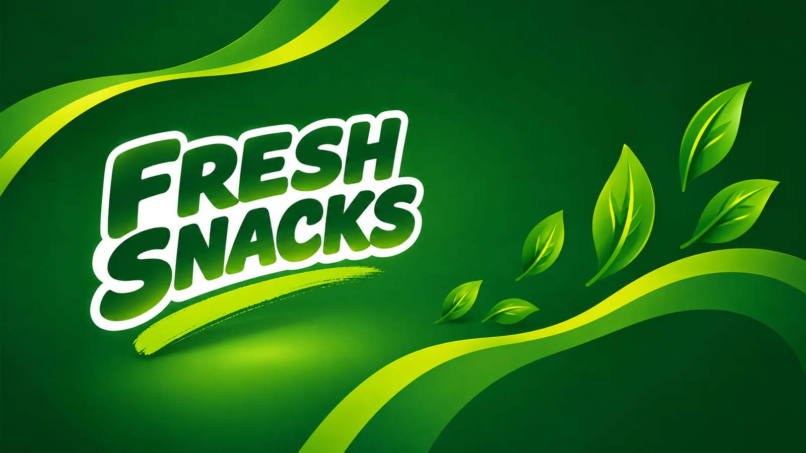

Favorite Snack
–
Your top snack by total spend.
Last purchased
–
Total spent
–
Securely connecting this device and loading your tab.
Took a snack? Choose it below and add it to your tab.
Loading snacks…
Loading snack log…
| Total snack value | – | ||
| Payments added | – | ||
| Current balance | – |
Scan with your phone camera to open Fresh Snacks — a private Guest profile is created for you automatically. No sign-up, no app.
Then tap what you take from the baskets and it goes on your own tab. Add your name under User Settings whenever you like.
0 snacks selected
Total
J$0
It stays visible on your tab, marked as under review, until Fresh Snacks resolves it.
This will notify Fresh Snacks that you have paid. The transaction will remain pending until the payment is confirmed.
If Fresh Snacks has been useful to you, a donation helps keep it running. Every bit is appreciated.
Getting today's exchange rate…
–
Keep your contact details current so Fresh Snacks can identify your tab.
Add your name so it's clear who's logging snacks on this shared tab.
The snack keeper needs your name and contact info to open a tab for you.
Each still-owed charge earns its own cash back based on the day it was added - click one to dismiss it.